真正ラベンダー
Lavandula angustifolia
成分酢酸リナリル・リナロール
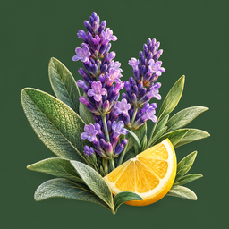
アロマ成分帳アロマ成分帳は、精油を「成分」と「安全条件」から引ける辞典アプリです。気になる香りの成り立ちや、使う前に知っておきたい注意を、手のひらで確かめられます。
iPhone・iPad（iOS 17以降） App Store で配信中
紹介動画（30秒・音声あり）
Features
名前から探すだけでなく、成分や安全条件から精油を見比べられるのが、アロマ成分帳の特長です。
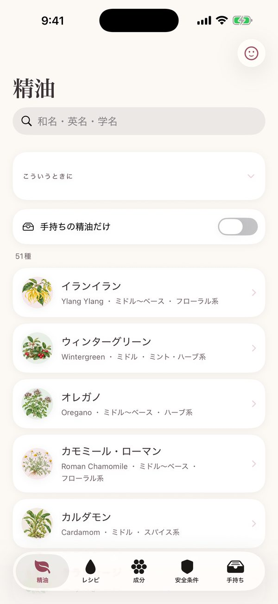
名前・英名・学名で探せます。香りの系統やノート、植物の部位などを、ひとつの画面で確認できます。
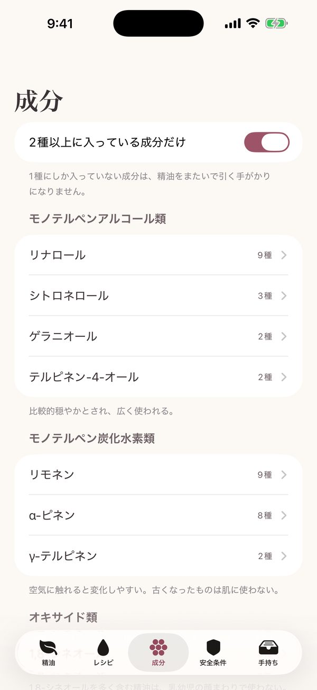
成分ごとに、その成分を含む精油を一覧できます。ちがう精油どうしの共通点が見えてきます。
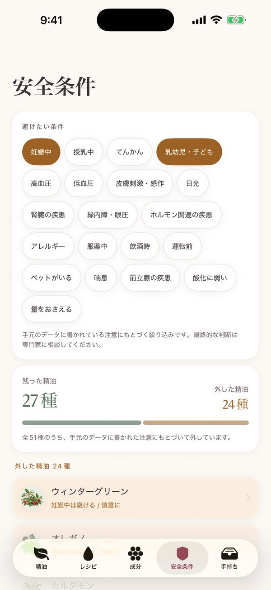
妊娠中・授乳中・乳幼児・ペットなど、避けたい条件を選ぶと、それに触れる精油が一覧から外れます。
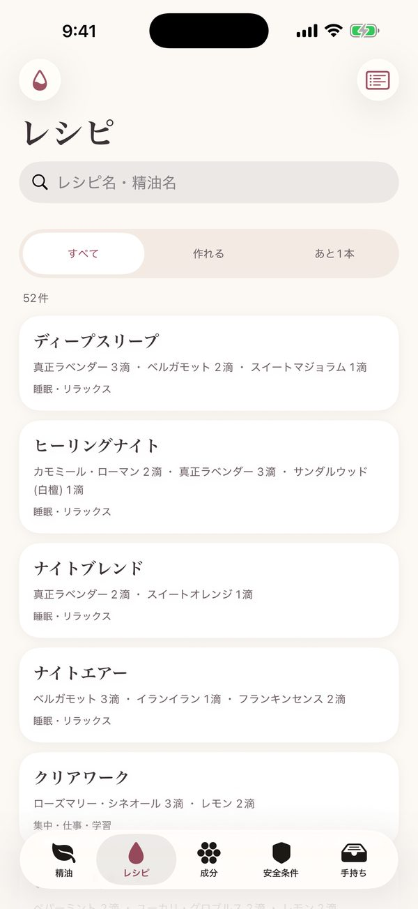
ブレンドのレシピや、手作りクラフトの作り方、キャリアオイルの選び方も。持っている精油を登録すると、いま作れるレシピが分かります。
Botanicals
精油は、花・葉・果実・樹皮など、植物のさまざまな部位から生まれます。アプリには51種の精油が、それぞれの植物の画とともに入っています。
Lavandula angustifolia
成分酢酸リナリル・リナロール
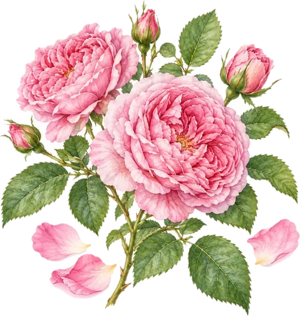
Rosa damascena
成分シトロネロール・ゲラニオール・ネロール
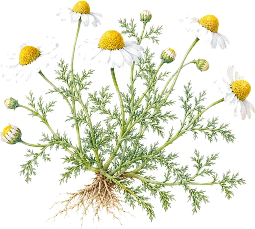
Chamaemelum nobile
成分アンゲリカ酸エステル類
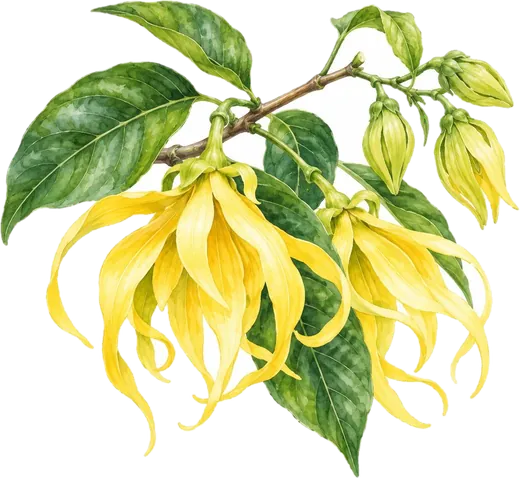
Cananga odorata
成分β-カリオフィレン・安息香酸メチル
Eucalyptus globulus
成分1,8-シネオール
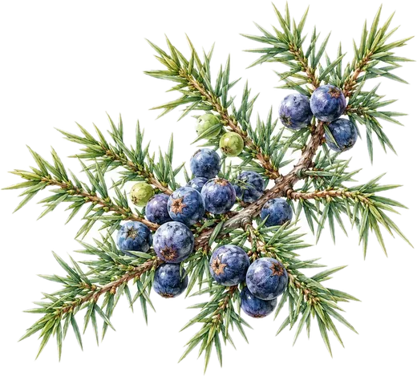
Juniperus communis
成分α-ピネン・ミルセン
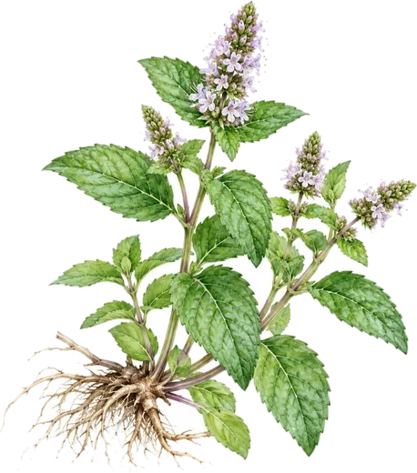
Mentha x piperita
成分メントール・メントン
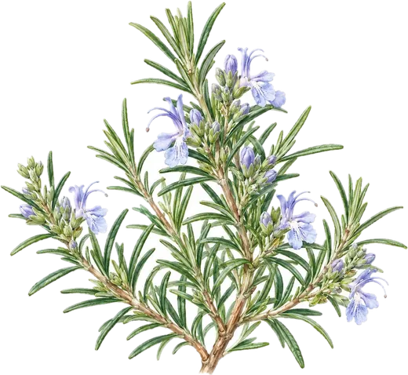
Salvia rosmarinus
成分1,8-シネオール・α-ピネン
ここに挙げたのは、51種のうちの8種です。成分の名前は、アプリに載せているものです。
For your everyday
登録も広告もなく、ひらいてすぐに使えます。
登録やログインはありません。辞典を見るだけなら、インターネットへの接続もいりません。
健康や安全に関わる画面から、もとにした公的機関・学術論文などの資料を確かめられます。
精油・成分・安全条件・注意事項は無料。レシピの配合や作り方の詳細はプレミアム（有料）です。料金について